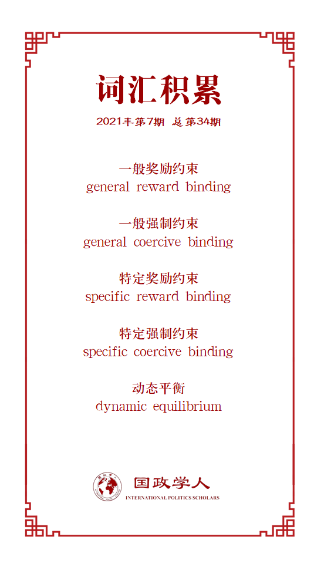

收录于合集

作品简介
【作者】 泉川泰博（Yasuhiro Izumikawa），日本中央大学综合政策学部教授，主要研究兴趣为联盟政治、东亚安全以及美国外交政策。
【编译】 黎开朗（国政学人编译员，立命馆大学国际关系学院）
【校对】 徐一君 唐一鸣
【审核】 阮镇炜
【排版】 余姣
【美编】 游钜家
【来源】 Yasuhiro Izumikawa, Binding Strategies in Alliance Politics: The Soviet-Japanese-US Diplomatic Tug of War in the Mid-1950s, International Studies Quarterly , Volume 62, Issue 1, March 2018, Pages 108–120, https://doi.org/10.1093/isq/sqx070
【归档】 《国际关系前沿》2021年第7期，总第34期
期刊简介
《国际研究季刊》（ International Studies Quarterly ）是国际研究协会的旗舰期刊，由牛津大学出版社每年发行四期，旨在发表与国际研究中重要理论性、实证性、规范性主题相关的领先学术成果。根据Journal Citation Reports的数据，该期刊最新影响因子为2.146。
联盟政治中的约束战略：
20世纪50年代中期
**苏日美的外交拉锯战 ******
Binding Strategies in Alliance Politics: The Soviet-Japanese-US Diplomatic Tug of War
in the Mid-1950s
泉川泰博
内容提要
在上个世纪50年代中期，苏联运用了楔子战略来使日本逐渐远离美国，然而这一计划最后以失败告终。在当时，日本政府曾公开表示希望同共产主义阵营改善关系，并且莫斯科也伸出了橄榄枝，针对未解决的领土争端，提出了对日本有利的决议。本文认为苏联的失败是因为美国使用了约束战略。为此，本文试图扩展对于约束战略以及约束和楔子两种战略的动态相互作用。作者首先给出了约束战略的类型，以及发展出了一种包含约束与楔子动态相互作用的理论。接着，作者用苏美日三边外交的案例来检验了这一理论，证明这两种战略是深度交织在一起并且也应该如此来分析。最后本文讨论了更广泛的理论含义，比如发展出一个联盟政治动态理论的可能性。
01
问题的提出以及既有文献回顾
当鸠山一郎首相在任时，他声称日本应该追求“自主独立”（jishu-
dokuritsu）的外交政策，并且呼吁与共产主义国家改善关系。然而上个世纪50年代中期日本追求独立外交政策的失败带来了两个困惑（puzzle）：
1.日本和苏联最终未能就领土问题达成议商令人感到奇怪。 因为当时苏联已经在领土问题上做出让步，满足了日方的初步要求。
2.从三边外交的逻辑来看，日本未能完成与苏联的谈判是一个反常现象。 因为日本作为三边中其他两国都想拉拢的焦点国家（focal
state），理应有议价能力，然而日本却未能对美国发挥其议价的能力。
为何日本作为一个较之台湾和韩国而言对美国更为重要的盟国，未能有效利用其议价能力？为何日本放弃接受苏联让步及更独立于美国行事的机会？
本文作者认为这些问题的答案是美国调整了其外交战略来把日本留在了自己这一边。
既有文献是从两种路径来讨论“联盟”： 第一种，视联盟为聚集联盟国家力量来对抗敌人的工具；第二种，视联盟为控制盟友以及限制其自主性的工具
，而约束战略可以兼顾以上两种作用。与近年楔子战略受到的广泛关注相比，约束战略在联盟政治领域鲜有人问津。为了填补这一理论空白，作者旨在创立一个能够解释这一战略用途和功效的理论。通过把这一理论应用到苏美日三边互动的案例中，本文表明，使用各种楔子策略背后的逻辑也同样能来解释国家是如何选择不同类型的约束策略的。更广泛地讲，约束战略和楔子战略构成了更为动态的联盟政治概念中的两个相互交织的部分。
02
约束战略：概念、类型和假设
1.概念 作者在定义约束战略时，主要强调的是与楔子战略的对立面，而非制度层面的约束，所以约束战略在本文被定义为
一国试图维持或增强盟友对其联盟的忠诚。 约束战略主要有两个重要的特征： 1.当发起国与其目标是正式或是非正式同盟时，这个战略才构成“约束”。
这有助于区分约束战略和楔子战略，其关键在于约束国与其目标之间的事前（ex ante）的关系性质。 2.
约束战略包含有条件或无条件地使用经济、政治或军事资源。
为了符合“战略”这一术语，一个国家必须进行深思熟虑的计算，并准备为实现目的付出代价。仅仅表达一个国家希望与其实际或潜在盟友建立联系只是空谈，而不是一种战略。
2.类型 约束战略有两种分类方法。第一种是像楔子战略按照基于积极还是消极的制裁分为奖励楔子（reward wedge）和强制楔子（coercive
wedge）一样，可分为奖励约束（reward binding）和强制约束（coercive binding）。积极制裁（positive
sanction）是指为目标国提供或者是许诺它所想要的。奖励通常指的是提供更强有力的安全承诺，以及其他诸如对外援助和政治支持等手段。而消极制裁（negative
sanction）则相反, 实际上或有可能剥夺目标国家积极珍视的东西。在实践操作过程中，消极制裁的主要表现为撤回奖励，或者是施加惩罚等。
第二种分类方法是将其分为一般（general）和特定（specific）约束战略。一般约束战略是指通过一个中长期的方法去维持或提高盟友的忠诚。特定约束战略是回应敌方的特定楔子战略的尝试。这两类分类方法最后得出了四种不同的约束战略：一般奖励约束（general
reward binding）、一般强制约束（general coercive binding）、特定奖励约束（specific reward
binding）以及特定强制约束（specific coercive binding）。
3.楔子和约束战略的动态互动 作者假定有A、B、C三个国家，A
与B结盟来对抗C；作者更进一步假定，A和C是主要对手，所以B面临C的威胁要小于A面临C的威胁。这使C有机会把B从AB联盟中“离间”出来。而当C试图对B采取楔子战略时，A会试图采取约束战略来维持B的忠诚。如果A的约束战略胜过C的楔子战略，那么联盟将继续保持稳固甚至是更上一层楼。反之，联盟将变得更加松散，甚至是瓦解。在初期阶段，当A认识到B的联盟忠诚对其自身安全重要性，并且同时意识到B对联盟的承诺可能会被弱化之时，A会认为有必要通过一般约束战略来阻止B倒向中立。
在这种情况下，A会更倾向于采取一般奖励约束而不是一般强制约束。
这是因为奖励战略会为约束国塑造一个良好的形象，并且当这个战略不是很有效的时候也不会恶化现状，但采用强制战略反而会激怒盟友从而降低忠诚度。而当C有A无法给B的一个具有内在价值的“诱饵”或者是C发现了A与B有利益分歧的领域时，C会倾向于使用奖励楔子战略，
而这会促使A采取特定奖励约束而不是特定强制约束，这与A倾向于选择一般奖励约束的原因一样。
当A给的奖励越多，A就越难升级它的特定奖励约束战略，因为A具有的资源是有限的。但与此同时，A奖励得越多，A就更容易通过撤回奖励来形成威胁。
最终，当A的奖励约束的“出价”低于C的奖励楔子时，A可能会诉诸于特定强制约束。 A与C的互动如上所述，但这种竞争的结果最终取决于B的选择，
如果B是理智的话，它将选择能够使它利益最大化或代价最小化的选项。
以上所提出的逻辑基于一个简化的假定，即所讨论的国家是作为整体的单一行为体。然而，作者认为在现实中还有国内因素会影响楔子和约束战略的效力。第一，国内因素可能会制约A和C的领导人充分使用可利用的奖励资源的能力。第二，B的国内因素也会影响它如何评估A的约束和C的楔子所带来的相对价值，换言之，B的计算不仅取决于A和C施加影响所带来的客观价值，还取决于B的主观感知。
03
案例研究
1.案例选择和分析标准 有三个原因使得作者选择上个世纪五十年代苏美日的互动案例。
第一，因为美国实施了不同种类的约束战略，这一案例提供了丰富的机会去检验约束战略分类的适用性。第二，这一案例突出了离间者(divider,苏联)与约束者（binder，美国）的互动机制。第三，该案例发生在两极格局之下，使得其成为约束战略理论中的一个难以处理的案例。因为正如华尔兹所言，两极体系迫使两个超级大国更关注其自身相对实力的发展，而非维护各自的同盟关系。而本案例证明，即便是在两极格局之下，超级大国也足够重视其同盟，为此来实施楔子和约束战略。
（1）美国对日的一般奖励约束
随着冷战在亚洲的加剧，美国开始将日本视为其在该地区最重要的潜在盟友。但与此同时，美国也注意到日本尝试寻求独立，甚至有可能尝试利用美苏冲突来获取利益。为此，美国采取了一般奖励约束战略。例如，在经济上，美国在日本的军事和其他采购支出有效地缓解日本在国际收支差额的问题。政治上，美国支持日本加入关贸总协定。然而美日在日本军备是否需要增强这一问题上未能达成一致，美国要求日本扩展其军队人数到30万，而日本因其经济当时较为脆弱，认为日本地面部队的最大规模是18万人。
（2）逐渐形成的苏联的奖励楔子
近期的研究也表明苏联在1953年以后想与日本改善关系。因此，苏联打算使用楔子战略离间美日两国。苏联认为如果能够成功拉拢日本，那么美国在该地区的军事基础和政治影响力将受到致命的打击。在这一决定的背后是苏联所持有的许多奖励资源。比如归还在西伯利亚的日本战犯，保证日本在北太平洋渔场的安全，承诺在日本申请加入联合国时不否决等。1954年鸠山一郎首相的上台被苏联认为是一个实施楔子战略的绝好机会。随后，苏日双方开始了非正式的接触。
（3）预防苏联楔子战略的尝试： 美国的特定奖励约束以及一般奖励约束的升级
苏联对日政策的变化促使美国采取特定奖励约束。1953年艾森豪威尔政府考虑归还奄美群岛给日本。在归还之后，美国开始重新思考既有的对日政策能否维持日本对美日同盟的承诺。特别是在日本军备是否需要增强这一问题上，美国开始意识到要求日本扩展军队并对其施加压力是一个糟糕的决定。这最终形成了1955年新的对日政策，避免对日本施加增强军备的压力，以防带来政治和经济方面的不稳定。这一政策变化同时缓解了困扰日本保守派的一些政治难题。因为当时日本经济困难，但保守派还是屈服于美国要求其增加军费的压力，为此经常受到进步派的批评。更具体而言，美国帮助鸠山克服了一场政治危机，使得鸠山重新意识到了与美国密切合作的价值以及疏远美国可能带来的潜在风险。
（4）苏联的特定奖励楔子： 提出返还齿舞群岛和色丹岛
虽然苏联在谈判过程中承诺为日本提供了不少好处，但同时也提出了让日本难以接受的条件，包括禁止日本加入任何敌视苏联的联盟和禁止美国海军军舰通过日本海峡。之后苏联在让日本放弃美日同盟这个要求上做出了让步。不仅如此，苏联还提出愿意把齿舞群岛和色丹岛还给日本，并把此作为其所能提供的最大让步。但日本并没有满足，反而更进一步要求苏联归还国后岛和择捉岛，这使得谈判陷入僵局。而这一领土谈判也引发了美国的警觉，因为这意味着日本可能也会接受禁止美国海军军舰通过日本海峡这一条件。而美国把这视为日本对美日同盟承诺的削弱信号。
（5）美国的特定强制约束： 将冲绳与北方领土问题相联系
面对这一不利于美国的情况，美国提醒日本千岛群岛和冲绳在旧金山和约中的处理方式是一样的。美国还威胁日本，如果向苏联妥协，那么美国将会宣布对冲绳保有完全主权。虽然美国在战后管理着冲绳，但美国承认日本对冲绳拥有事实上的主权来作为美国一般奖励约束战略的一部分，而美国对日本“冲绳主权”的威胁则是特定强制约束战略。美国之后脱离了不干涉苏日谈判的政策，公开表示支持日本对北方四岛的主权。这使得鸠山政府无法忽视被美国煽动的民意以及来自民党内部反俄成员施加的压力，最终导致无法对苏联的两岛方案做出妥协。
2.替代解释 作者在此讨论了关于美国的约束战略为何能阻止日本接受苏联领土让步的其他解释。
第一种传统的解释认为日本高层领导者的无能导致了日本追求独立外交政策的失败。比如，日本外交大臣重光葵的草率导致他提出了归还额外两个岛屿的要求。但这个解释是站不住脚的，重光葵是一个经验丰富的外交官，以他的战略思维而闻名。另一个更合理的解释归结于日本国内政治。当苏联提出来领土让步之时，正值日本民主和自由两党合并为自民党的之际，对于当时亲美的自由党而言和苏联的关系是一个敏感问题，因此使得鸠山政府无法接受苏联的领土让步。然而仅凭国内政治也无法解释日本提高领土让步的决定，因为这一决定主要是由日本外务省的高级官员作出，理由是担心如果此时接受苏联的领土让步，将会对美日关系产生负面影响。除此以外，用国内政治来解释日本搁置领土问题的决定，忽略了日本国内反对鸠山的程度是与美国政策相互关联的这一事实。换言之，美国的公开表态使得日本国内反对声音得到了加强。
04
一个动态的联盟政治理论
本文包含了三个更广泛的理论含义。
第一，一定条件下，一个国家可以成功地操纵其外部环境。与华尔兹认为的国家不能以调整其外交战略来克服均势机制的观点相反，国家运用约束战略可以有效地塑造其外部环境。
第二，本文为反对均势理论的核心论点（无政府状态为平衡或均衡的结果创造了足够强的动机）提供了进一步的证据。正如案例所示，无政府状态不足以驱使日本制衡苏联，日本需要在美国的约束战略的诱导下才这样做。
第三，本文表明联盟不应该被视为一个静态的物体，而应该被视为 动态平衡 （dynamic
equilibrium，即一种现象之所以能保持平衡，并不是因为其构成要素是稳定的，而是因为各抗衡要素之间力的相互抵消）的现象。这意味着在联盟政治之中，相对的物质实力仅仅是结盟或重新结盟的一个起点，国家实施约束和楔子战略的方式可以影响联盟是否或如何形成以及维持多久。
译者评述
本文作为一篇讨论联盟政治理论的文章，最大的贡献在于提出了由约束和楔子战略的互动和相互拉扯所形成的动态联盟理论。与人一样，国家也不是一个孤立的个体，也会与其他国家进行互动，而这种互动最终会带来战略上的变化。随着楔子战略在学术界受到的关注日益增多，与其相反的约束战略并未受到足够的重视。作为一个与敌方在互动中时刻变化的战略，单讨论楔子战略本身的意义并不是很大。国家除了考虑选择何种类型的楔子战略，何时实施楔子战略以外，观察对方的反应以及做出相应的调正对于成功实施自己的战略同样重要。如果把国家间的约束和楔子战略之间的互动比作是拳击比赛，那么只顾自己出拳而不观察对手躲闪情况和出拳的拳击手必然会输掉比赛。因此，本文不仅在理论层面系统讨论了约束战略以及给出了其具体类型，对于楔子战略在实践层面的运用也有很大的启发。
作者检验自己理论的案例是20世纪50年代中期苏日美的外交拉锯战。正如作者提到的三个原因一样，本案例中的确是检验作者理论的绝佳案例。三方的互动生动展现了国家之间是如何“出拳”，“躲避”以及“再出拳”的过程。并且作者也在随后讨论了可能的替代解释，并解释了这些替代解释的不足，增加了论证的完整性和理论的可信性。然而，译者认为作者还漏掉了一个美国成功的重要因素，既美国自身的实力。在美日同盟这样一个典型的实力不对称同盟之中，美国的实力要远超于日本。美国本身强大的实力，再加上驻日美军的存在使得美国在美日联盟中处于绝对的优势地位，并且由于美日实力差距过大，美国管理美日同盟也是十分容易的。[1]这也从某种程度上表明，苏联的楔子战略在美国的绝对实力面前并不起作用。对于想要实施楔子战略分化敌方同盟的国家而言，除了关注约束和楔子战略在战略层面的互动以外，还需要关注敌方同盟阵营中的主要国家的物质实力以及与其同盟阵营中其他国家的实力差距来判断楔子战略能在多大程度上起到作用。
参考文献
[1]苏若林，唐世平：《相互制约:联盟管理的核心机制》，载《当代亚太》2012年第３期，第６～３８页。
词汇整理

文章观点不代表本平台观点，本平台评译分享的文章均出于专业学习之用, 不以任何盈利为目的，内容主要呈现对原文的介绍，原文内容请通过各高校购买的数据库自行下载。
好好学习，天天“在看”
国政学人
支持学术公益与知识传播
微信扫一扫赞赏作者 __赞赏
已喜欢，对作者说句悄悄话
取消 __
发送给作者
发送
最多40字，当前共字
上一页 1/3 下一页
长按二维码向我转账
支持学术公益与知识传播
受苹果公司新规定影响，微信 iOS 版的赞赏功能被关闭，可通过二维码转账支持公众号。